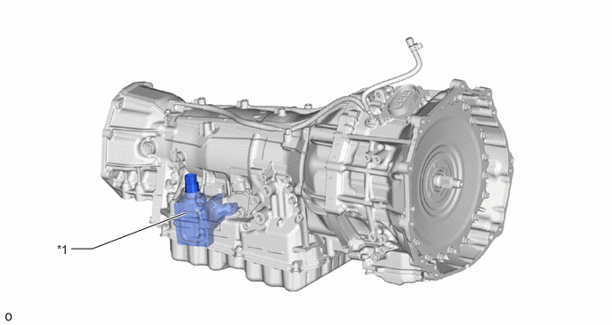
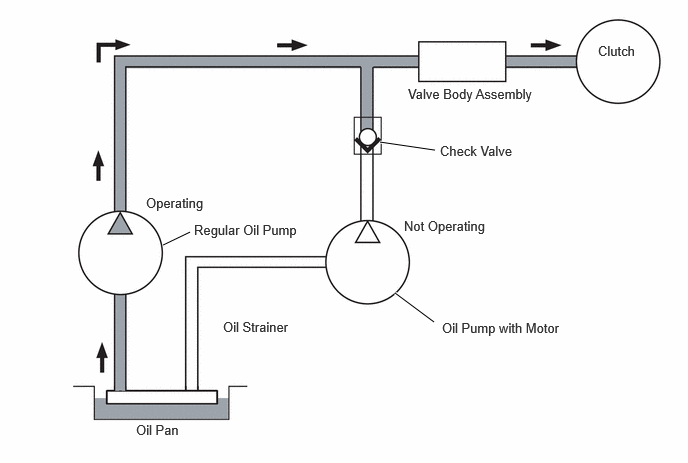
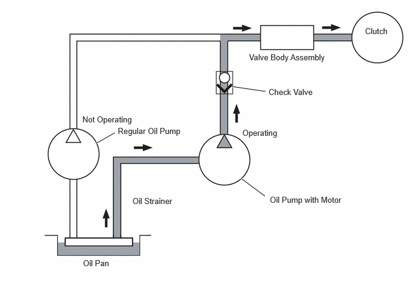

| Last Modified: 10-07-2025 | 6.11:8.1.0 | Doc ID: NM100000002MR8E |
| Model Year Start: 2024 | Model: Tacoma | Prod Date Range: [03/2024 - ] |
| Title: L580F (HYBRID TRANSMISSION / TRANSAXLE): HYBRID TRANSMISSION SYSTEM: ELECTRIC OIL PUMP; 2024 - 2026 MY Tacoma Tacoma HV [03/2024 - ] | ||
ELECTRIC OIL PUMP
CONSTRUCTION
(a) An oil pump with motor assembly is provided. The oil pump with motor assembly is installed next to the valve body assembly. The oil pump with motor assembly allows for a stable supply of ATF, during an idling stop, ready-on engine start and regeneration at low speed etc..
(b) The oil pump with motor assembly is an electric oil pump integrated with the motor driver, achieving a small size and weight.
HINT:
The oil pump with motor assembly only operates during an idling stop, ready-on engine start, garage operation and assists main/regular oil pump at low speed regeneration.
|
*1 |
Oil Pump with motor Assembly |
- |
- |
OPERATION
(a) The regular oil pump of the AT generates ATF pressure using engine or Motor Generator (MG) power .
(b) The electric oil pump is used for ready-on engine start, garage engine start, regeneration at low speed and while idling stop to produce necessary oil pressure because the regular oil pump stops or works at very low speed under such situations.
A check valve is placed between the regular oil pump and oil pump with motor, preventing high pressure from the regular oil pump coming into the oil pump with motor when the regular oil pump works.
